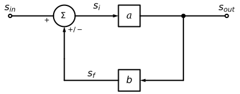
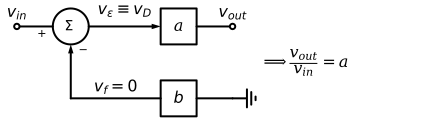
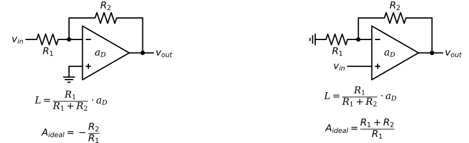
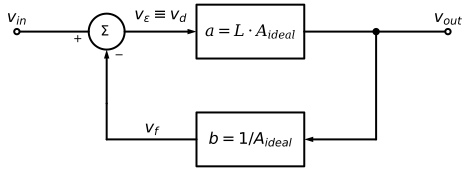
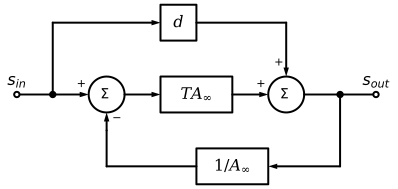
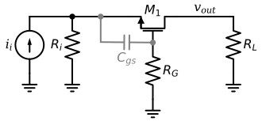

7 Introduction to Feedback
7.1 Preliminaries
In electronics the term feedback refers to the situation where a signal sensed (or derived or sampled or measured) from the output port of an amplifier is returned to the input port, where it is combined with the externally applied input signal to create a new signal to be processed by the amplifier itself.
- when the returned signal is added to the external signal, we have positive feedback (a.k.a. regenerative feddback)
- when the returned signal is subtracted we have negative feedback (a.k.a. degenerative feedback)
Negative feedback was conceived in 1928 by Harold Black.
7.2 Systematic Feedback Analysis Frameworks
- Two-port Analysis
- Proposed by Harold Black
- Helpful for gaining basic intuition about feedback
- Map the feedback network onto one of four topologies
- voltage-voltage (serie-shunt), current-voltage (shunt-shunt), voltage-current (series-series), current-current (shunt-series), depending on the desired input/output quantities
- In practice, the feedback network “\(b\)” (and possibly the forward amplifier “\(a\)”) are not unilateral, so mapping arbitrary circuits into a generic “\(ab\)” block diagram that uses two-ports is not obvious
- The feedback network causes loading at the input and output of the basic amplifier
- model the feedback network as an ideal two-port and absorb the loading effects into the forward amplifier. This procedure is often quite tedious.
- model the feedback network as an ideal two-port and absorb the loading effects into the forward amplifier. This procedure is often quite tedious.
- Some feedback circuits cannot be modeled using two-ports
- e.g. bias circuits with feedback loops tend to have only one port
- Return Ratio Analysis
- Proposed by Hendrik Bode
- “Asymptotic” method. It does no attempt to break the circuit into pieces
- The closed-loop properties of the feedback circuit are described in terms of the return ratio of a dependent source in an active device
- The block diagram used to analyze the closed loop properties of the feedback circuit is extended to handle the feedforward through the feedback network
- Often easier than two-port analysis
7.3 Negative Feedback
Basic Idea
- trade off gain for other desirable properties
Desirable properties
- desentisize gain
- extend the bandwidth
- control input and output impedance
- reduce NL distorsion
Drawbacks (undesired properties)
- reduced gain
- under certain circumstances the negative feedback in an amplifier can become positive and of such a magnitude as to cause oscillations (instability)
NOTE: it should not be implied that positive feedback always lead to instability
7.4 General negative feedback structure
Basic Terminology:
\(s_{in}\) = input signal applied to the feedback system
\(s_{out}\) = output signal from the feedback system
\(a = \dfrac{s_{out}}{s_i}\) = open-loop gain = gain of “basic” amplifier = gain of feedforward amplifier
\(b\) = feedback factor
\(a \cdot b = L\) = loop gain (it is always unit-less)
\(1 + ab = 1 + L\) = amount of feedback
\(s_i \equiv s_ \epsilon \equiv s_d = s_{in} - s_f\) = input to “basic” amplifier = error = difference
\(A = \dfrac{s_{out}}{s_{in}}\) = closed-loop gain = gain of feedback system
Ideal feedback assumptions
- the feedback network does not load the basic amplifier output
- the feedback network does not load the basic amplifier input
- the feedback network is unilateral
- the basic amplifier is unilateral
Closed-loop gain expression
The feedback network measures (or samples or senses) the output signal \(s_{out}\) and provides (returns) a feedback signal \(s_f\) (that is related to \(s_{out}\) by the feedback factor b) \[ \begin{split} s_{out} &= a \cdot s_i \\ s_{f} &= b \cdot s_{out} \\ s_ \epsilon &\equiv s_d \equiv s_i = s_{in} - s_f \end{split} \]
\[ \begin{split} A &= \frac{s_{out}}{s_{in}} = \frac{s_{out}}{s_i + s_f} = \frac{1}{\dfrac{s_i}{s_{out}} + \dfrac{s_f}{s_{out}}} = \frac{1}{\dfrac{1}{a} + b} = \frac{a}{1+ab} = \\ &= \frac{1}{b} \cdot \frac{1}{1 + 1/(ab)} = \frac{1}{b} \cdot \frac{1}{1 + \dfrac{1}{L}} = \frac{1}{b} \cdot \frac{L}{1+L} \approx \frac{1}{b} \end{split} \]
The most important benefit coming from the use of negative feedback is under the condition \(L \gg 1\):
- for \(L \gg 1\) the actual gain \(A (\approx 1/b)\) is virtually independent of the open-loop gain \(a\). The open-loop gain \(a\) is typically an extremely inaccurate parameter, and varies significantly subject to drift with temperature, supply voltage, fabrication process, and DC biasing conditions.
Although physically unattainable the limit \(L \rightarrow \infty\) represent the ideal condition:
\[ A_{ideal} = \lim\limits_{L \to \infty} A = \frac{1}{b} \]
Key result: when the loop gain \(L\) is large, the closed loop gain \(A\) approaches the ideal closed loop gain \(A_{ideal}\), which is equal to \(1/b\)
To achieve gain we need \(b \leq 1\).
\(b \leq 1\) is easy to implement. We can for example use a wire (\(b=1\)), or a resistive divider (ratiometric) or a capacitive divider (ratiometric).
Example 1 - voltage buffer
\(v_f = v_{out} \Rightarrow b = v_f/v_{out} = 1\)
\(v_{out} = a \cdot (v_{in} - v_{out})\)
\(v_{out} (1+a) = a \cdot v_{in}\)
\(\dfrac{v_{out}}{v_{in}} = \dfrac{a}{1+a} \approx 1\)
Example 2 - non-inverting voltage amplifier
\(b = \dfrac{v_f}{v_{out}} = \dfrac{R_1}{R_1+R_2}\)
\(\dfrac {v_{out}}{v_{in}} \approx \dfrac{1}{b} = 1 + \dfrac{R_2}{R_1}\)
If we regard \(1/L\) as an error term, then \(L\) gives a measure of how close the actual gain \(A\) is to the ideal gain \(A_{ideal} = 1/b\).
\[ A = \frac{1}{b} \cdot \frac{1}{1 + \dfrac{1}{L}} \approx \frac{1}{b} \cdot \Bigl( 1 - \dfrac{1}{L} \Bigr) \]
The % gain error between actual gain \(A\) and ideal gain \(A_{ideal}\) is usually defined as follows:
\[ \begin{split} gain \space error \space \% &= 100 \times \frac{A - A_{ideal}}{A_{ideal}} = 100 \times \frac{A_{ideal} \cdot \Bigl ( \dfrac{1}{1 + 1/L} \Bigr ) - A_{ideal}}{A_{ideal}} = \\ &= 100 \times \frac{-1}{1+L} \approx 100 \times \frac{-1}{L} \end{split} \]
Example 3 - op amp based non inverting voltage amplifier
KLC at node \(v_{out}\):
\[ \frac{v_N - v_{out}}{R_2} = \frac{v_{out} - a_D \cdot (v_{in} - v_N)}{r_o} \]
KCL at node \(v_{N}\): \[ \frac{v_N - v_{in}}{r_i} + \frac{v_N}{R_1} + \frac{v_N - v_{out}}{R_2} = 0 \]
For \(a_D = 10^6\), \(r_i = 10 M \Omega\), \(r_o = 10 \Omega\), \(R_1 = 20 k \Omega\) and \(R_2 = 80 k \Omega\):
\[ \begin{split} A_{ideal} &= \frac{R_1+R_2}{R_1} \\ A &= \frac{v_{out}}{v_{in}} = \frac{a_D \cdot r_i (R_1 + R_2) + R_1 r_o}{a_D \cdot R_1 r_i + r_o (R_1 + r_i) + R_1R_2 + r_i(R_1+R_2)} = 4.999975 \\ \\ gain \space error &= \frac{4.999975 -5}{5} = -5 \cdot 10^{-6} = -5 ppm \end{split} \]
The exact analysis is very tedious. A better way to obtain the same insight is to use the simpler approach shown in example 4.
7.5 The error signal \(s_\epsilon\) and the feedback signal \(s_{f}\)
From Figure 7.2
\[ \begin{split} s_ \epsilon &= \dfrac{s_{out}}{a} = \dfrac{A \cdot s_{in}}{a} = \frac{\cancel a}{1+L} \cdot \frac{s_{in}}{\cancel a} \\ &= \dfrac{s_{in}}{1+L} \end{split} \]
also
\[ \begin{split} s_f &= b \cdot s_{out} = b \cdot A \cdot s_{in} = \cancel {b} \cdot \frac{1}{\cancel{b}} \frac{1}{1+1/L} \cdot s_{in} \\ &= \dfrac{s_{in}}{1+1/L} \end{split} \]
These results show that for a large loop gain (ideally for \(L \rightarrow \infty\)), the error signal becomes very small (ideally \(s_ \epsilon \rightarrow 0\)), causing the feedback signal \(s_f\) to closely follow the input signal \(s_{in}\) (\(s_f \rightarrow s_{in}\)).
If the feedback signal closely tracks the input signal, then the output signal is also a close “replica” of the input signal, and therefore feedback is also effective in reducing distorsion due to small signals. Low frequency distorsion is caused by changes in the slope of the basic-amplifier transfer characteristic (i.e. changes in the small signal gain of the basic-amplifier).
7.6 Benefits of negative feedback
7.6.1 Gain Desensitivity
To investigate the effect that a variation on the open-loop gain \(a\) causes on the closed-loop gain \(A\) we differentiate \(A\) w.r.t. \(a\) \[ A = \dfrac{a}{1+ab} \] \[ \dfrac{dA}{da} = \dfrac{ 1 + ab - ab}{(1+ab)^2} = \dfrac{1}{(1+ab)^2} \] \[ \Delta A = \dfrac{\Delta a}{(1+ab)^2} \] \[ \dfrac{\Delta A}{A} = \dfrac{\Delta a}{A} \cdot \dfrac{1}{(1 + ab)^2} = \dfrac{\Delta a}{\dfrac{a}{1+ab}} \cdot \dfrac{1}{(1 + ab)^2} = \dfrac{\Delta a / a}{(1+ab)} \] Thanks to feedback, a fractional change in the gain of the basic amplifier is reduced by a factor \(1+L = 1 + ab\) in the closed-loop. Conceptually, the loop gain \(L\) can be be made arbitrarily large. The loop gain is a key parameter and as we will see later it plays an important role also in bandwidth and impedance calculations.
7.6.2 Effect of feedback on non-linearity
Amplifiers are made up of transistors. Since, transistors are non-linear devices, the transfer charateristic of any practical amplifier is non-linear. Assume a basic amplifier that besides the desired linear relationship, also exhibits a quadratic and cubic relationship between its input and output.
\[ \begin{split} v_{out} &= a_1 (v_{in} - b v_{out}) + a_2 (v_{in} -b v_{out})^2 + a_3 (v_{in} - b v_{out})^3 \end{split} \tag{7.1}\] \[ \begin{split} &v_{out} = A_1 v_{in} + A_2 v_{in}^2 + A_3 v_{in}^3 + \space ... \end{split} \tag{7.2}\]
Substituting Equation 7.2 into Equation 7.1 we get: \[ \begin{split} v_{out} = \space &a_1 (v_{in} - b A_1 v_{in} -b A_2 v_{in}^2 - b A_3 v_{in}^3 - ... ) \space + \\ & a_2 (v_{in} - b A_1 v_{in} -b A_2 v_{in}^2 - b A_3 v_{in}^3 - ... )^2 \space + \\ &a_3 (v_{in} - b A_1 v_{in} - b A_2 v_{in}^2 - b A_3 v_{in}^3 - ...)^3 \space \end{split} \]
and equating back into Equation 7.2:
for the linear term\[ \begin{split} &A_1 {v_{in}} = a_1 {v_{in}} - a_1 b A_1 {v_{in}} \Leftrightarrow A_1 (1 + a_1 b) = a_1 \\ &A_1 = \dfrac{a_1}{1+a_1 b} \end{split} \tag{7.3}\]
or: \[ \begin{split} &A_1 = a_1 - a_1 b A_1 \Leftrightarrow A_1 = a_1 (1 - b A_1) \Leftrightarrow \\ &1 - bA_1 = \frac{A_1}{a_1} = \frac{1}{1+a_1b}\\ \end{split} \tag{7.4}\]
for the quadratic term\[ \begin{split} &A_2 {v_{in}^2} = - a_1 b A_2 {v_{in}^2} + a_2 \left( v_{in}^2 + b^2 A_1^2 v_{in}^2 - 2 bA_1v_{in}^2 \right) \Leftrightarrow \\ &A_2 (1 + a_1b) = a_2 (1 - b A_1)^2 \Leftrightarrow A_2 = a_2 \dfrac{(1-bA_1)^2}{1+a_1b} \Leftrightarrow \\ &A_2 = \dfrac{a_2}{(1+a_1b)^3} \end{split} \tag{7.5}\]
for the cubic term\[ \begin{split} &A_3 \cdot {v_{in}^3} = - a_1 b A_3 {v_{in}^3} + a_3 (1 - b A_1)^3 {v_{in}^3} - 2 a_2 b A_2 (1-bA_1) v_{in}^3 \Leftrightarrow \\ &A_3 (1+a_1 b) = a_3 (1 -b A_1 )^3 - 2 a_2b A_2 (1- bA_1) \Leftrightarrow \\ &A_3 = \dfrac{a_3 (1 - bA_1)^3 - 2 a_2 b A_2 (1 - bA_1)}{(1+a_1 b)} \Leftrightarrow \\ &A_3 = \dfrac{a_3}{(1+a_1 b)^4} - \dfrac{2 a_2^2b}{(1+a_1b)^5} \end{split} \tag{7.6}\]
The linear term \(a_1\) (as expected) is reduced by \(1 + L\), where \(L\equiv a_1b\)
The quadratic term \(a_2\) is reduced by \((1 + L)^3\)
The cubic term \(a_3\) is reduced by \((1+L)^4\), but ther is also an extra term due to the interaction with the second-order term \(a_2\)
If at different signal levels, the basic amplifier’s small-signal gain varies, since feedback reduces the overall gain variations w.r.t. the gain variations of the basic amplifier, then feedback also reduces distorsion.
Note:
feedback reduces distorsion without reducing the output voltage range. The overall gain is reduced, but additional gain can be provided with a preamplifier that operates with smaller signal swings, and therefore less distorsion.
feedback does not help with saturation. In the case an amplifier’s output shows hard saturation (i.e., the output become independent of the input), the incremental gain of the basic amplifier \(\rightarrow 0\), so the amount of feedback also \(\rightarrow 0\), and as a result negative feedback cannot improve the situation.
7.6.3 Effect of feedback on bandwidth
As an example, assume the transfer function of the basic amplifier is the following: \[ a(j\omega) = \dfrac{a_0}{1+\dfrac{j\omega}{\omega_p}} \] Then, the closed-loop transfer function is \[ A(j\omega) = \dfrac{a(j\omega)}{1+ a(j\omega) \cdot b} = \dfrac{a_0}{1+ a_0 b} \cdot \dfrac{1}{1+\dfrac{j\omega}{\omega_p} \cdot \dfrac{1}{(1+ a_0 b)}} \] The gain is reduced by \(1 + L_0\), but the bandwidth is increased by \(1+L_0\), where \(L_0=a_0b\).
The product of gain and bandwidth remains constant.
7.6.4 Effect of feedback on input/output resistances
In actual applications the input and output resistances (a.k.a. terminal resistances) of the amplifier play a key role. When an amplifier is driven by a non ideal source and drives an output load, the input resistance forms a divider with the source’s resistance, and the output resistance forms a divider with the load, therefore reducing the overall gain from source to load. This reduction is usually referred as loading effect. Negative feedback modifies the terminal resistances in ways that tend to reduce the impact of loading.
Series-shunt (voltage-voltage) feedback configuration - Voltage Amplifier
Let’s consider the application of negative feedback around a voltage amplifier. In this case feedback is performed sampling the output voltage and then feeding back a voltage that is a scaled version of the output voltage “into” the external input voltage source driving the amplifier. Note that the operation of voltage sensing at the output is performed in parallel, or shunt (when we measure a voltage we place the voltmeter in parallel, never in series), while to combine the external input voltage source and the voltage returned by the feedback network we connect them in series (to connect two voltage sources we place them in series, never in parallel).
To focus on the effect of negative feedback on \(r_i\) and \(r_o\) of the basic amplifier, we assume there is no loading effect on both ports of the basic amplifier. To neglect loading at the input’s of the basic amplifier, we assume that the sources \(v_{in}\) and \(b v_{out}\) have zero series resistances. To neglect loading at the output port of the basic amplifier, we assume the output port of the basic amplifier is left open and the input port of the feedback network has infinite resistance.
Note: for the series-shunt feeback configuration, b is unitless.
It can be shown:
\[ R_{in} = \dfrac{v_{x}}{i_{x}} = r_i (1+L) \]
\[ R_{out} = \dfrac{v_t}{i_t} = \dfrac{r_o}{1+L} \]
For \(L \rightarrow \infty\) the series-shunt configuration gives \(R_{in} \rightarrow \infty\) and \(R_{out} \rightarrow 0\)
Shunt-shunt (current-voltage) feedback configuration - Transimpedance Amplifier
Let’s consider the application of negative feedback around a transimpedance amplifier. In this case feedback is performed sampling the output voltage and then feeding back a current that is a scaled version of the output voltage “into” the external input current source driving the amplifier. Note that to combine the external input current source and the current returned by the feedback network we connect them in parallel or shunt (to connect two current sources we place them in parallel, never in series).
To neglect loading at the input of the basic amplifier, we assume that the sources \(i_{in}\) and \(b v_{out}\) have infinite parallel resistances. To neglect loading at the output port of the basic amplifier, we assume the output port of the basic amplifier is left open and the input port of the feedback network has infinite resistance.
Note: for the shunt-shunt feeback configuration, b has dimensions of \(1/ \Omega\).
It can be shown:
\[ R_{in} = \dfrac{r_i}{1+L} \]
\[ R_{out} = \dfrac{r_o}{1+L} \]
For \(L \rightarrow \infty\) the shunt-shunt configuration gives \(R_{in} \rightarrow 0\) and \(R_{out} \rightarrow 0\)
Series-series (voltage-current) feedback configuration - Transconductance Amplifier
Let’s consider the application of negative feedback around a transconductance amplifier. In this case feedback is performed sampling the output current and then feeding back a voltage that is a scaled version of the output current “into” the external input voltage source driving the amplifier. Note that the operation of current sensing at the output is performed in series, or shunt (when we measure a current we place the ampmeter in series, never in parallel).
To neglect loading at the input of the basic amplifier, we assume that the sources \(v_{in}\) and \(b i_{out}\) have zero series resistances. To neglect loading at the output port of the basic amplifier, we assume the output port of the basic amplifier is shorted and the input port of the feedback network has zero resistance.
Note: for the series-series feedback configuration, b has dimensions of \(\Omega\).
It can be shown:
\[ R_{in} = r_i (1+L) \]
\[ R_{out} = r_o (1+L) \]
For \(L \rightarrow \infty\) the series-series configuration gives \(R_{in} \rightarrow \infty\) and \(R_{out} \rightarrow \infty\)
Shunt-series (current-current) feedback configuration - Current Amplifier
Let’s consider the application of negative feedback around a current amplifier. In this case feedback is performed sampling the output current and then feeding back a current that is a scaled version of the output current “into” the external input current source driving the amplifier.
To neglect loading at the input of the basic amplifier, we assume that the sources \(i_{in}\) and \(b i_{out}\) have infinite parallel resistances. To neglect loading at the output port of the basic amplifier, we assume the output port of the basic amplifier is shorted and the input port of the feedback network has zero resistance.
Note: for the shunt-series feedback configuration, b is unitless.

It can be shown:
\[ R_{in} = \dfrac{r_i}{1+L} \]
\[ R_{out} = r_o (1+L) \]
For \(L \rightarrow \infty\) the shunt-series configuration gives \(R_{in} \rightarrow 0\) and \(R_{out} \rightarrow \infty\)
7.7 Feedback analysis of op amp circuits
In typical op amp circuits \(r_i\) and \(r_o\) are negligible compared to the resistances used in the feedback network.
7.7.1 Non Inverting configuration
For identifying \(a\) and \(b\) directly from the circuit, we can set \(v_{in} = 0\) and note that with \(v_{in}=0\)
\(i_{out} = \dfrac{v_{out}}{R_2 + R_1 || r_i} = \dfrac{a_D v_D}{r_o + R_2 + R_1 || r_i}\)
\(v_f = -v_D = i_{out} \cdot ({R_1 || r_i})\)
\(v_{out} = i_{out} \cdot \bigl( {R_2 + R_1 || r_i} \Bigr)\)
So,
\(b = \dfrac{v_f}{v_{out}} = \dfrac{R_1 || \cancel{r_i}}{R_1 || \cancel{r_i} + R_2} \approx \dfrac{R_1}{R_1 + R_2}\)
\(a = \dfrac{v_{out}}{v_D} = a_D \cdot \dfrac{R_2 + R_1 || \cancel{r_i}}{R_2 + R_1 || \cancel{r_i} + \cancel{r_o}} \approx a_D\)
In practice, for identifying \(a\) and \(b\), it is better to think directly in terms of loop gain \(L\) \[ L = ab = - \frac{v_r}{v_t} \] The minus sign is due to the \(-\) at the summing node
Note: To find the loop gain, it is best to break the loop at the opamp’s voltage controlled voltage source. This approach preserves all of the node impedances in the circuit.
\(L = -\dfrac{v_r}{v_t} = a_D \cdot \dfrac{R_1 || \cancel{r_i}}{R_1 || \cancel{r_i} +R_2 + \cancel{r_o}}\)
\(A = A_{ideal} \dfrac{L}{1+L} \approx A_{ideal} \Bigl( 1 - \dfrac{1}{L} \Bigr)\)
\(gain \space error \approx \dfrac{A_{ideal} \Bigl( 1 - \dfrac{1}{L} \Bigr) - A_{ideal}}{A_{ideal}} = -\dfrac{1}{L}\)
The value of \(A_{ideal}\) is already known from the ideal op amp analysis
Infinite opamp gain (\(a_D \rightarrow \infty\)) implies infinite open-loop gain (\(a \approx a_D\)) and therefore infinite loop gain \(L=ab\)
\[ A_{ideal} = \frac{1}{b} \approx 1 + \frac{R_2}{R_1} \]
Example 4 - non inverting op amp based voltage amplifier
For \(a_D = 10^6\), \(r_i = 10 M \Omega\), \(r_o = 10 \Omega\), \(R_1 = 20 k \Omega\) and \(R_2 = 80 k \Omega\):
\(L = -\dfrac{v_r}{v_t} = a_D \cdot \dfrac{R_1 || \cancel{r_i}}{R_1 || \cancel{r_i} +R_2 + \cancel{r_o}} \approx 10^6 \dfrac{20 k\Omega}{20 k\Omega + 80 k\Omega}\)
The exact value of \(L\) is 199600, so the above approximation has 0.2% error.
\(A = 5 \cdot \dfrac{200000}{1+200000} = 4.999975\)
\(gain \space error \approx -\dfrac{1}{200000} = -5 ppm\)
This is the same result as before, except we did not have to go through a tedious nodal analysis and plug in numbers in a “high entropy” espression.
What if the op amp gain changes ?
If the gain is cut in half : \[ A = 5 \cdot \dfrac{100000}{1+100000} = 4.999950 \] If the gain doubles: \[ A = 5 \cdot \dfrac{400000}{1+400000} = 4.999988 \]
- The closed loop gain (\(A\)) is immune to large variations in the op amp gain
- The voltage gain of the overall circuit (= closed loop gain) is primarily defined by the divider ratio of the resistive feedback
- A quantity that we can control very precisely
7.7.2 Inverting configuration
In this configuration the resistors affect both the input and the feedback path.
Franco, Sergio. 2015. Analog Circuit Design: Discrete & Integrated. New York: McGraw-Hill Education.
It is not clear how to map the circuit into the block diagram representation. The flow of the signal through the circuit elements is not unidirectional.

We can still try to make things work using superposition.

\[ a = \frac{v_{out}}{v_{in}} = - \dfrac{R_2}{R_1 + R_2} \cdot a_D \]
\[ -ab = \frac{v_{out}}{v_{test}} = - \dfrac{R_1}{R_1 + R_2} \cdot a_D \]
Note: the loop gain is the same as the one of the non-inverting configuration.
\[ A_{ideal} = \dfrac{1}{b} = \dfrac{a}{ab} = - \dfrac{R_2}{R_1} \]
Beyond \(A_{ideal}\) the only other value we need to know is the loop gain \(L=ab\) so we can compute the deviation from ideality
7.7.3 Comparison between non-inverting and inverting topology

The following model is valid for both topologies:

In summary op amp circuits can be analyzed as follows:
- Find \(A_{ideal}\) using nodal analysis, assuming infinite op amp gain
- Find the loop gain to compute the deviation from the ideal case
- This is usually straight forward, especially when there are ideal breakpoints that do not alter the impedance loading around the loop
- The best breakpoint for a voltage amplifier is right at the controlled voltage source
\[ A = \dfrac{v_{out}}{v_{in}} = A_{ideal} \cdot \dfrac{L}{L+1} = A_{ideal} \cdot \dfrac{1}{1+\dfrac{1}{L}} \]
7.7.4 The four feedback configurations using op amps
Sometimes the operations of output sensing and input returning are not obvious. Even though strictly speaking the op amp is a voltage amplifier, it can be used in any of the four feedback configurations.
Series-Shunt (voltage-voltage) configuration (Voltage Amplifier)
For \(a_v \rightarrow \infty\) this circuit gives:
\(A_v = \dfrac{v_{out}}{v_{in}} = \dfrac{1}{b} = 1 + \dfrac{R_2}{R_1}\)
\(R_{in} \rightarrow \infty\)
\(R_{out} \rightarrow 0\)
This circuit is the popular non inverting op amp based voltage amplifier.
Shunt-Shunt (current-voltage) configuration (Transimpedance Amplifier)
For \(a_v \rightarrow \infty\) this circuit (= TIA) gives:
\(R_m = \dfrac{v_{out}}{i_{in}} = \dfrac{1}{b} = -R\)
\(R_{in} \rightarrow 0\)
\(R_{out} \rightarrow 0\)
Even though the shunt-shunt configuration is a TIA, it forms the basis of the popular inverting op amp based voltage amplifier.
This becomes more evident if we perform a source transformation to convert the voltage source \(v_{in}\) in Figure 7.29 into a current source \(i_{in} = \dfrac{v_{in}}{R_1}\) as shown in Figure 7.30.
For the inverting voltage amplifier as \(a_v \rightarrow \infty\)
\(A_v = \dfrac{v_{out}}{v_{in}} = \dfrac{v_{out}}{i_{in}} \times \dfrac{i_{in}}{v_{in}} = -\dfrac{R_2}{R_1}\)
\(R_{in} = R_1\)
\(R_{out} \rightarrow 0\)
Series-Series (voltage-current) configuration (Transconductance Amplifier)
For \(a_v \rightarrow \infty\)
\(G_m = \dfrac{i_{out}}{v_{in}} = \dfrac{1}{b} = \dfrac{1}{R}\)
\(R_{in} \rightarrow \infty\)
\(R_{out} \rightarrow \infty\)
Shunt-Series (current-current) configuration (Current Amplifier)
For \(a_v \rightarrow \infty\)
\(A_i = \dfrac{i_{out}}{i_{in}} = \dfrac{1}{b} = -(1 + \dfrac{R_2}{R_1})\)
\(R_{in} \rightarrow 0\)
\(R_{out} \rightarrow \infty\)
7.8 Return Ratio Analysis
7.8.1 Closed-loop gain using return ratio
Given a feedback amplifier, with a controlled source of value k (see Figure 7.33), the closed loop gain can be derived as shown in (Gray et al. 2009): \[ A = \dfrac{s_{out}}{s_{in}} = A_\infty \cdot \dfrac{T}{1+T} + \dfrac{d}{1+T} \]
Visually, the expression for the closed loop gain can be summarized through the block diagram in Figure 7.34: \[ \left(s_{in} - \dfrac{s_{out}}{A_\infty}\right) \cdot T A_\infty + d \cdot s_{in} = s_{out} \] \[ A = \dfrac{s_{out}}{s_{in}} = A_\infty \cdot \dfrac{T}{1+T} + \dfrac{d}{1+T} \]

The three terms needed to find the closed loop gain (\(A_\infty\), \(T\), \(d\)) are all directly computable and measurable (SPICE), and do not rely on any idealization of the feedback network.
In practical circuits the feedback network loads both the input and output of the amplifier, so idealizing its effect is not realistic. With two-port analysis incorporating the effect of loading without the use of suitable approximations/idealizations of the feedback network becomes extremely tedious.
The return ratio analysis does not try to identify the transfer function of the basic amplifier and the feedback network separately. It aims to identify directly the gain around the feedback loop. From the loop gain of a circuit, we can determine:
- stability
- closed-loop gain
- nodal impedances
The return ratio analysis can be applied to any arbitrary feedback circuit, independent of topology and port structure.
The return ratio for a dependent source in a feedback loop is found as follows:
- Set all independent sources to zero
- Identify a dependent source in the feedback loop that you want to analyze and break the loop by disconnecting the dependent source from the rest of the circuit. Leave the dependent source open-circuited if it is of the voltage type, or short-circuited if it is of the current-type
- On the side of the break that is not connected to the dependent source, inject an independent test source \(s_t\) of the same sign and type as the dependent source
- Find the return signal \(s_r\), generated at the controlled source that was disconnected
- The return ratio \(T\) for the dependent source is \(T=-s_r/s_t\)
- Provided that we have chosen a controlled source that breaks the loop globally, the return ratio of the dependent source is equal to the loop gain of the circuit.
- For the stabilty analysis of a feedback circuit we must have the loop gain not just any return ratio. Unless, we have a single loop feedback circuit, the return ratios computed for different dependent sources are not necessarily equal (Hurst 1991), so in general, the return ratio is not a global property of the loop (Hajimiri 2023).
Hurst, P. J. 1991. “Exact Simulation of Feedback Circuit Parameters.” IEEE Transactions on Circuits and Systems 38 (11): 1382–89. https://doi.org/10.1109/31.99170.
The direct feedthrough \(d\) is given by:
\[ d = \dfrac{s_{out}}{s_{in}} |_{k = 0} \]
which is the transfer function from input to output evaluated for k = 0. In other words, the direct feedthrough \(d\) is the signal transfer from input to output through the passive elements, it represent a signal path from input to output that goes around rather than through the controlled source k.
The value of \(A_\infty\) is the closed loop gain when the feedback circuit is ideal (that is when \(T \rightarrow \infty\)). If \(T \rightarrow \infty\) then \(A = A_\infty\), because \(\dfrac{T}{1+T} \rightarrow 1\) and \(\dfrac{d}{1+T} \rightarrow 0\)
Since letting \(k \rightarrow \infty\) causes \(T \rightarrow \infty\) (Gray et al. 2009) the value of \(A_\infty\) can be easily found by evaluating \[ \dfrac{s_{out}}{s_{in}} |_{k \rightarrow \infty} \]
When \(k \rightarrow \infty\), the controlling signal \(s_{ic}\) for the dependent source must be zero for the output of the controlled source to be finite. The controlled source output will be finite if the feedback is negative.
The key difference between the return ratio analysis and the two-port analysis can be seen comparing Figure 7.34 and Figure 7.35 In the two-port analysis all forward signal transmission is lumped in the block \(a\). In the return ratio analysis, there are two forward signal paths: one path (\(d\)) for the feedback network and another path (\(TA_\infty\)) for the forward gain.
Example 5 - common source stage with current source biasing
Consider the circuit in Figure 7.36 and its AC equivalent model in Figure 7.37

Current source biasing in this circuit doesn’t work without feedback setting the drain voltage.
Given the finite gain and the nature of the impedances of the MOS, in this circuit is hard to decouple a(s) and b(s), so using the two-port analysis is not a good option. \[ A(s) = \dfrac{a(s)}{1+a(s)b(s)} \]
In this case, since the circuit is not very complex we can use exact nodal analysis.
\[ \dfrac{v_{in}-v_x}{R_1} + \dfrac{v_{out}-v_x}{R_2} = 0\Leftrightarrow \dfrac{v_{in}}{R_1} - \left( \dfrac{1}{R_1} + \dfrac{1}{R_2} \right) \cdot v_x + \dfrac{v_{out}}{R_2}=0 \tag{7.7}\] \[ \dfrac{v_x-v_{out}}{R_2} = g_m v_x \Leftrightarrow v_x=\dfrac{v_{out}}{1-g_m R_2} \tag{7.8}\]
Substituting Equation 7.7 in Equation 7.8: \[ \dfrac{v_{out}}{v_{in}} = \dfrac{1 - g_m R_2}{1+g_m R_1} = - \dfrac{R_2}{R_1} \left( \dfrac{1-\dfrac{1}{g_m R_2}}{1+\dfrac{1}{g_m R_1}} \right) \]
If the \(g_m R\) terms are much greater than 1, the result is the same as the op amp solution.
Let’s now confirm that return ratio analysis produces the same result.
Return ratio calculation
\(v_{gs} = - R_1 i_t\)
\(i_r = g_m v_{gs} = - g_m R_1 i_t\)
\(\dfrac{i_r}{i_t} = - g_m R_1\)
\(T \equiv - \dfrac{i_r}{i_t} = g_m R_1\)
Ideal closed loop gain calculation
\(A_\infty\) is the transfer function when the gain element of the controlled source becomes \(\infty\). In our case this corresponds to \(g_m \rightarrow \infty\). If the gain element becomes \(\infty\) the controlling signal must be zero. In our case this correspond to the input node \(v_{gs}=0\), therefore:
\(\dfrac{v_{in}}{R_1}=-\dfrac{v_{out}}{R_2} \Leftrightarrow A_\infty = \dfrac{v_{out}}{v_{in}} = - \dfrac{R_2}{R_1}\)
Direct feedtrough (d) calculation
\(d\) is defined as the transfer function when the gain element becomes zero. In our case for \(g_m = 0\)
\(v_{out} = v_{in} \Leftrightarrow d = \dfrac{v_{out}}{v_{in}} = 1\)
In summary:
- \(T = g_m R_1\)
- \(A_\infty = - \dfrac{R_2}{R_1}\)
- \(d = 1\)
Therefore, as expected the closed loop gain computed using the return ratio framework matches with the result obtained using exact nodal analysis:
\[ \begin{split} A &= A_\infty \cdot \dfrac{T}{1+T} + \dfrac{d}{1+T} \\ &= - \dfrac{R_2}{R_1} \cdot \dfrac{g_m R_1}{1+g_m R_1} + \dfrac{1}{1+g_m R_1} \\ &= \dfrac{1 - g_m R_2}{1 + g_m R_1} \end{split} \]
Example 6 - constant-\(g_m\) reference
In this example, we will use the return ratio framework to evaluate the stability of the bias circuit in Figure 7.41. The bias circuit in Figure 7.41 is know as constant-\(g_m\) reference or \(\Delta V_{GS}\) reference.
Note: this circuit has only one-port so it cannot be analyzed using the two-ports framework.
\[ \begin{split} I_{REF} \cdot R_2 &= V_{GS1} - V_{GS2} = V_{OV1} - V_{OV2} \\ &\approx V_{OV1} \left( 1 - \dfrac{1}{\sqrt{m}} \right) \end{split} \]
\[ I_{REF} \approx \dfrac{V_{OV1} \left( 1 - \dfrac{1}{\sqrt{m}} \right)}{R_2} \]
- This circuit has positive feedback.
- A positive feedback system is stable only if its loop gain is less than 1 (\(T < 1\))
To identify which dependent source to use for computing the loop gain \(T\) of the circuit, the feedback loop we break must be global.
- \(M_2\) and \(R_2\) degeneration, form a local feedback loop, so \(M_2\) cannot be used to break the main loop
- \(M_1\) and \(M_4\) are diode-connected; their transcondactance elements are equivalent to a resistance \(1/g_m\), so cannot be used to break the main loop
- \(M_3\) is the only “normal” CS gain stage in the circuit, so it is the only element that can be used to break the main loop
In general, the return ratio of CG, CD, or degenerated CS cannot be used to find the “global” loop gain of a circuit.
To compute the loop gain \(T\) of the circuit, it is convenient to first unroll and linearize the AC equivalent model in Figure 7.42:
and then insert the test source:
\(i_r = g_{m3}v_4\)
\(i_t = - g_{m1}v_1\)
\(v_4 = -i_2 \left( 1/ g_{m4}\right)\)
\(i_2 = g_{m2} v_2\)
\(v_1 = v_2 + g_{m2}v_2 R_2 \Leftrightarrow v_2 = \dfrac{v_1}{\left( 1+g_{m2}R_2 \right)}\)
Putting the pieces together:
\(\dfrac{i_r}{i_t}= \left(-\dfrac{g_{m3}}{g_{m1}}\right) \left(- \dfrac{g_{m2}}{g_{m4}}\right) \left(\dfrac{1}{1+g_{m2}R_2}\right)\)
Therefore: \(T = -\dfrac{i_r}{i_t}= -\left(\dfrac{g_{m3}}{g_{m1}}\right) \left(\dfrac{g_{m2}}{g_{m4}}\right) \left(\dfrac{1}{1+g_{m2}R_2}\right)\)
The resulting return ratio is negative (i.e. the feedback is definitely not negative, even at zero frequency). The challange is to keep the magnitude of the return ratio less than unity (\(|T| < 1\)).
The loop has two inverting gain blocks, each loaded with a “diode connected” MOS device. The gain block formed by \(M_3\) is loaded by the diode connected MOS \(M_1\) and the gain block formed by \(M_2\) and \(R_2\) is loaded by the diode connected MOS \(M_4\).
Example 7 - potential stability issue of the constant-\(g_m\) reference
Consider the design of the constant-\(g_m\) reference circuit in Figure 7.47:
Assume: \(I(M_3)=I(M_4)=I_{REFN}=100 μA\)
\(V_{OV1} = 200 mV\)
\(m=2\)
For the given circuit:
\(g_{m4}=g_{m3} = g_{m1} = \dfrac{2 \cdot 100 μA}{200 mV} = 1 mS\)
Recalling that (assuming square law):
\(V_{OV2} = \dfrac{V_{OV1}}{\sqrt{m}}\)
\(I_{REF} = \dfrac{V_{OV1} \left( 1- \dfrac{1}{\sqrt{m}} \right)}{R_2}\)
for m=2:
\(V_{OV2} = 141 \space mV\)
\(R_2 = 586 \space \Omega\)
\(g_{m2}=\dfrac{2 \cdot 100 μA}{141 mV} = 1.41 \space mS\)
\(\dfrac{g_{m2}}{1+g_{m2}R_2} = 772 \space μS\)
The magnitude of the return ratio is less than 1:
\(|T| = \dfrac{i_r}{i_t} = \left( \dfrac{g_{m2}}{1+g_{m2}R_2} \right) \left(\dfrac{1}{g_{m4}} \right) \left( \dfrac{\cancel{g_{m3}}}{\cancel{g_{m1}}} \right)= 0.772 \space (< 1)\)
Therefore, the circuit designed is stable, but is possible to have problems. Consider, Figure 7.48, if the parasitic capacitance \(C\) shorts \(R_2\), the return ratio becomes larger than 1 and the circuit becomes unstable.
\(\dfrac{i_r}{i_t} = \left( \cancelto{1}{\dfrac{1}{1+g_{m2}R_2}} \right) \left(\dfrac{g_{m2}}{g_{m4}} \right) \left( \dfrac{\cancel{g_{m3}}}{\cancel{g_{m1}}} \right) \rightarrow 1.41\)
7.8.2 Closed-loop impedances using return ratio
Feedback can be used to modify the port impedances of a circuit.
Given a feedback circuit with a controlled source of value k (see Figure 7.49), the impedance at any port, including the input and output ports, can be computed (Gray et al. 2009) using the following expression (a.k.a. Blackman’s formula):
Gray, Paul R, Paul J Hurst, Stephen H Lewis, and Robert G Meyer. 2009. Analysis and Design of Analog Integrated Circuits. John Wiley & Sons, 4/e.
\[ Z_{port} = Z_{port}(k=0) \cdot \left[ \dfrac{1+T(port \space shorted)}{1+T(port \space open)} \right] \]
- \(Z_{port}(k=0)\) is the port impedance with the return ratio’s gain element k set to 0 (either set \(g_m=0\) or \(a_v =0\))
- \(T(port \space shorted)\) is the return ratio with the port under consideration shorted
- \(T(port \space open)\) is the return ratio with the port under consideration open
Often, one of the two return ratios in the formula is zero, in these cases feedback increases or decreases the impedance by a factor \((1+T)\)
In summary, Blackman’s impedance formula:
- it applies to any feedback circuit, regardless of the type of feedback
- it is extremely useful and easy to use
- it is based on return ratio calculations
Example 8 - Input resistance of non-inverting op amp configuration
\[ R_{in} = R_{in0} \cdot \left[ \dfrac{1+T(port \space shorted)}{1+T(port \space open)} \right] \]
To find \(R_{in0}\) set the op amp gain \(a_v\) to zero: \[ R_{in0} = r_i + R_1 || (R_2 + r_o|| R_L) \approx r_i \]
To compute \(T(port \space shorted)\) short the node \(v_p\) to ground and find the return ratio:
\[ T_{sc} = -\dfrac{v_r}{v_t} |_{sc} = a_v \cdot \dfrac{R_1}{r_o + R_L|| (R_2 + r_i || R_1) } \approx a_v \cdot \dfrac{R_1}{R_1+R_2} \]
- To compute \(T(port \space open)\) leave the node \(v_p\) floating and find the return ratio:
\[ T_{open} = -\dfrac{v_r}{v_t} |_{open} = 0 \]
Feedback increases the input impedance of the circuit significantly. \[ R_{in} \approx r_i \cdot \dfrac{1+ a_v \cdot \dfrac{R_1}{R_1+R_2}}{1+0} = r_i \cdot \left( 1+ a_v \cdot \dfrac{R_1}{R_1+R_2} \right) \]
For \(a_v=10^6\), \(R_1 = 20 k\Omega\), \(R_2 = 80k\Omega\):
\[ R_{in} \approx r_i \cdot 200000 \]
Example 9 - Output resistance of non-inverting op amp configuration
\[ R_{out} = R_{out0} \cdot \left[ \dfrac{1+T(port \space shorted)}{1+T(port \space open)} \right] \]
To find \(R_{out0}\) set the op amp gain \(a_v\) to zero: \[ R_{out0} = r_o || [R_2 + R_1 || (r_i + R_s)] \approx r_o \]
To compute \(T(port \space shorted)\) short the node \(v_{out}\) to ground and find the return ratio:
\[ T_{sc} = -\dfrac{v_r}{v_t} |_{sc} = 0 \]
- To compute \(T(port \space open)\) leave the node \(v_{out}\) floating and find the return ratio:

\[ v_n = \dfrac{v_t}{r_o + R_2 + [R_1 || (r_i + R_s)]} \cdot {R_1 || (r_i + R_s)} \approx \dfrac{v_t}{R_2 + R_1} \cdot R_1 \]
\[ v_p = v_n \dfrac{R_s}{r_i + R_s} \approx 0 \]
\[ T_{open} = -\dfrac{v_r}{v_t} |_{open} = - \dfrac{a_v (v_p - v_n)}{v_t} \approx a_v \cdot \dfrac{R_1}{R_1+R_2} \]
Feedback decreases the output impedance of the circuit significantly.
\[ R_{out} \approx r_o \cdot \dfrac{1+0}{1+a_v \dfrac{R_1}{R_1+R_2}} = \dfrac{r_o}{1+a_v \dfrac{R_1}{R_1+R_2}} \]
For \(a_v=10^6\), \(R_1 = 20 k\Omega\), \(R_2 = 80k\Omega\):
\[ R_{out} \approx \dfrac{r_o}{200000} \]
Example 10 - Output resistance of bootstrapped source follower
Consider the bootstrapped source follower stage of Figure 7.56 and its equivalent small signal circuit to compute the return ratio with the output port shorted (Figure 7.57) and with the output port left floating (Figure 7.58)

The output resistance for \(k=a_v=0\) is:
\[ R_{out0} \equiv R_{out}(k=0) \equiv R_{out}(a_v=0) = \dfrac{1}{g_m} \]
Output port shorted implies:
\(T_{sc} = -\frac{v_r}{v_t} |_{sc} = 0\)
Output port open means:
\(g_m \cdot v_{gs} = 0 \rightarrow v_{gs}=0 \rightarrow -v_d = v_t \rightarrow v_r = -a_v \cdot v_t\)
\(T_{open} = -\frac{v_r}{v_t} |_{open} = a_v\)
Therefore, the closed-loop output resistance is: \[ R_{out} = R_{out0} \cdot \dfrac{1 + T_{sc}}{1+T_{open}} = \dfrac{1}{g_m} \cdot \left( \dfrac{1}{1+a_v}\right) \]
Example 11 - Output resistance of super source follower
The super-source follower uses feedback to reduce its output impedance.

The small signal model of the super-source follower is shown in Figure 7.60.
- To find \(R_{out0}\) we must set \(v_{in}=0\) and \(k=0\). In this circuit we can use, either \(g_{m1}\) or \(g_{m2}\) as k. We will use, \(k=g_{m2}\).
The current in the \(g_{m1}\) generator flows only in \(r_{o1}\), so \(M_1\) has no effect on the output resistance when \(g_{m2}=0\)
\[ R_{out0} \equiv R_{out}(g_{m2}=0) = r_{o2} \]
- The return ratio for \(g_{m2}\) with the output port shorted is:
\[ T_{sc} = -\dfrac{i_r}{i_t} |_{sc} = 0 \]
Shorting the output port forces \(v_{out}=0\)
\(v_{out} \equiv v_x \Leftrightarrow v_x = 0\)
\(v_x = -v_1 \leftrightarrow v_1 = 0\)
\(g_{m1} \cdot v_1=0 \Leftrightarrow v_y = 0\)
\(v_2 = x_x - v_y = 0 \Leftarrow g_{m2}v_2 \equiv i_r = 0\)
- The return ratio for \(g_{m2}\) with the output port open is:
\[ T_{open} = -\dfrac{i_r}{i_t} |_{open} = g_{m2}r_{o2} \left( 1 + g_{m1}r_{o1}\right) \]
Opening the output port gives:
\(v_x = -i_t \cdot r_{o2} \Leftrightarrow i_t = - \dfrac{v_x}{r_{o2}}\)
\(v_x = -v_1\)
\(v_y - v_x = -g_{m1} \cdot v_1 \cdot r_{o1} \Leftrightarrow v_y = v_x + g_{m1} \cdot r_{o1} \cdot v_x \Leftrightarrow v_y = v_x \left(1+g_{m1}r_{o1} \right)\)
\(v_2 = v_y\)
\(i_r \equiv g_{m2}v_2 = g_{m2} \left( 1 + g_{m1} \cdot r_{o1} \right) \cdot v_x\)
\(T_{open} = - \dfrac{i_r}{i_t} = g_{m2}r_{o2} \left( 1 + g_{m1}r_{o1}\right)\)
- The closed-loop output resistance is:
\[ R_{out} = R_{out0} \cdot \dfrac{1+ T_{sc}}{1+T_{open}} = \dfrac{r_{o2}}{1 + g_{m2}r_{o2} \left( 1 + g_{m1}r_{o1}\right) } \]
Assuming \(g_m r_o \gg 1\)
\[ R_{out} \approx \dfrac{1}{g_{m1}g_{m2}r_{o1}} \]
Example 12 - Input and output resistance of shunt-shunt stage (TIA)
\(R_{in}(g_{m}=0) = R_F + r_o\)
\(T(input \space shorted) = 0\)
\(T(input \space open) = g_m r_o\)
Therefore, the closed-loop input resistance is: \[ R_{in} = \left(R_F + r_o \right) \cdot \dfrac{1}{1+g_mr_o} \approx \dfrac{1}{g_m} \left( 1 + \dfrac{R_F}{r_o}\right) \]
Closed-loop output resistance\(R_{out}(g_{m}=0) = r_o\)
\(T(input \space shorted) = 0\)
\(T(input \space open) = g_m r_o\)
Therefore, the closed-loop output resistance is: \[ R_{out} = r_o \cdot \dfrac{1}{1+g_mr_o} \approx \dfrac{1}{g_m} \]
Example 13 - Output resistance of active cascode
The “active cascode” circuit is also referred as “regulated cascode” or “gain-boosting” technique.
- To find \(R_{out0}\) we set \(v_{in}=0\) and \(k=a_v=0\)
With \(a_v=0\) the gate of \(M_2\) gets grounded:
\[ \begin{split} & R_{out0} \equiv R_{out}(a_v=0) = r_{o1} + r_{o2} \left( 1 + g_{m2}' \right) \approx r_{o1} \cdot r_{o2} \cdot g'_{m2} \\ & with \space g_{m2}' = g_{m2} + g_{m2b} \end{split} \]
- To find the return ratio for \(a_v\) with the output port open, we set \(v_{in}=0\) and leave the output node floating
The current of the \(g_{m}\)-generators (\(g_{m2} v_{gs2}\) and \(g_{mb2} v_{bs2}\)) flows only in \(r_{o1}\), changing the drain voltage of \(M_2,\) but keeping the source voltage of \(M_2\) to \(v_x=0 \Rightarrow v_d=-v_x=0\). Therefore, \(v_r = a_v \cdot v_d = 0\)

\[ T_{open} = - \dfrac{v_r}{v_t} |_{open} = 0 \]
- To find the return ratio for \(a_v\) with the output port shorted, we set \(v_{in}=0\) and ground the output node (the output node is the drain of \(M_2\))
With \(M_2\) drain to ground (CD), \(v_x=-v_d\) is the output of a CD with \(v_t\) as input.
\(v_t=v_{gs2} - v_d\)
Neglecting the \(r_o\) terms w.r.t. the \(1/g_{mb2}\) term:
\(-v_d \approx \dfrac{g_{m2} v_{gs2}}{g_{mb2}} \Rightarrow v_t \approx v_{gs2} \left( 1 + \dfrac{g_{m2}}{g_{mb2}}\right) \Rightarrow -\dfrac{v_d}{v_t} \approx \dfrac{g_{m2}}{g_{m2}+g_{mb2}} \approx 1\)
so the return ratio is: \[ T_{sc} = - \dfrac{v_r}{v_t} |_{sc} \approx a_v \cdot \dfrac{g_{m2}}{g_{m2}+g_{mb2}} \approx a_v \]
- The closed-loop output resistance is:
\[ R_{out} = R_{out0} \cdot \dfrac{1 + T_{sc}}{1+T_{open}} \approx r_{o1} \cdot r_{o2} \cdot g'_{m2} \cdot a_v \]
Example 14 - Using Blackman’s formula for ZVTC calculations

Using first principles (KVL and KCL) we can derive that:
\[ \tau_{Cgs} = C_{gs} \cdot \dfrac{R_i + R_G}{1+g_{m}R_i} \]
Let’s look at the problem, using return ratio.
The port (gate-source) impedance with the return ratio’s gain element \(g_m\) set to 0 is:
\(R_{gs}(g_m=0) = R_i + R_G\)
The return ratio for the gain element \(g_m\) with port under consideration shorted is:
\(T_{sc} = -\dfrac{i_r}{i_t} |_{sc} = 0\)
Shorting the port forces \(v_{gs}=0\) so it “kills” the \(g_m\) generator.
The return ratio for the gain element \(g_m\) with port under consideration open is:
\(T_{open} = -\dfrac{i_r}{i_t} |_{open} = g_m \cdot R_i\)
\(v_s = i_t \cdot R_i\)
\(v_g = 0 \Rightarrow v_{gs} = - i_t \cdot R_i\)
\(i_r = g_m v_{gs} = -g_m R_i i_t\)
The closed-loop port impedance between G and S is: \[ R_{gs} = R_{gs}(g_m=0) \cdot \dfrac{1+T_{sc}}{1+T_{open}} = \dfrac{R_i+R_G}{1+g_mR_i} \]
Example 15 - Voltage gain and output resistance of common source with degeneration using return ratio
\[ A_v = \dfrac{v_{out}}{v_{in}} = A_{\infty} \cdot \dfrac{T}{1+T} + \dfrac{d}{1+T} \]
\(A_{\infty}\) is the gain of the circuit when the gain element k of the controlled source tends to \(\infty\) (note that if \(k = g_m = \infty\), for the current of the dependent source to be finite, it must be \(v_{gs} = 0\)).
\(A_{\infty} = \dfrac{v_{out}}{v_{in}} |_{g_m \rightarrow \infty}= - \dfrac{R_D}{R_S}\)
\(d\) is the gain of the circuit when the gain element k of the controlled source equals 0.
\(d = \dfrac{v_{out}}{v_{in}} |_{g_{m} = 0} = 0\)
\(T\) is the return ratio of the dependent source.
To compute the return ratio instead of separating the dependent source from the rest of the circuit and replacing it with an independent source of the same kind as always done so far, we will follow an equivalent procedure consisting of adding an independent source \(s_x\). In practice, this procedure is usually more easily performed, because it does not require tearing the original circuit apart. See (Middlebrook 2006) and (Hajimiri 2023).
Middlebrook, R. D. 2006. “The General Feedback Theorem: A Final Solution for Feedback Systems.” IEEE Microwave Magazine 7 (2): 50–63. https://doi.org/10.1109/MMW.2006.1634022.
Hajimiri, Ali. 2023. “Analog. Inexact Science, Vibrant Art.” 2023. https://chic.caltech.edu/wp-content/uploads/2023/01/Hajimiri_Analog_DRAFT012023.pdf.
The introduction of \(s_x\) is completely equivalent to using an independent source \(s_t\) in place of the separated dependent source and monitoring the signal \(s_r\) that returns to the separated dependent source.
\(s_t = s_x + s_r\)
\(v_{gs} = - i_t R_S\)
\(i_r = g_m v_{gs} = - g_m R_S i_t\)
\(T = -\dfrac{i_r}{i_t} = g_m R_S\)
Therefore, as expected:
\[ A_v = \dfrac{v_{out}}{v_{in}} = A_{\infty} \cdot \dfrac{T}{1+T} + \dfrac{d}{1+T} = \dfrac{-g_m R_D}{1 + g_m R_S} \]
Output resistance
To find the output resistance we use Blackman’s formula.
The output resistance with \(g_m=0\) is:
\(R_{out}(g_m=0) = R_S = r_o\)
With the output port open:
\(v_{gs} = - i_t R_S = 0 \Rightarrow i_r = g_m v_{gs} = 0\)
So, the return ratio with the output port open is:
\(T_{open} = - \dfrac{i_r}{i_t} |_{open} = 0\)
With the output port shorted:
\(v_{gs} = - (R_S || r_o) \cdot i_t \Rightarrow i_r = g_m v_{gs} = - g_m \cdot (R_S|| r_o) \cdot i_t\)
So, the return ratio with the output port shorted is:
\(T_{sc} = - \dfrac{i_r}{i_t} |_{sc} = g_m (R_S||r_o)\)
And the output resistance is:
\[ \begin{split} R_{out} &= R_{out}(g_m=0) \cdot \dfrac{1 + T_{sc}}{1 + T_{open}} = (R_S + r_o) \left( 1 + g_m\dfrac{R_S r_o}{R_S + r_o} \right) = \\ &= R_S + r_o (1 + g_m R_S) \end{split} \]
7.8.3 Summary - Return Ratio Analysis
- Return-ratio analysis is an alternative approach to two-port feedback analysis.
- Provided the return ratio T is computed for a dependnt source that breaks the feedback loop globally, the return ratio is a measure of loop gain. In general, the return ratio of a controlled source is a measure of how much of the signal generated by that controlled source is returned due to feedback, it is not necessarily the loop gain (Hurst 1992).
- For negative feedback circuits T > 0
- In an ideal feedback system \(T \rightarrow \infty\) and the closed loop gain is \(A_{\infty}\)
- Blackman’s formula gives the closed-loop impedance in terms of two return ratios. The formula is the same for any type of feedback circuit, and it applies to any port (not only the input and output ports)
- Return ratio analysis is often simpler than two-port analayis
- Return ratio analysis uses equations that are independent of the type of feedback.
- Two-port analysis uses four-feedback configurations (series-series, series-shunt, shunt-series, and shunt-shunt), therefore, the type of feedback must be correctly identified before starting the analysis
- In practice, all physical networks are multiloop feedback structures. Unwanted local return loops exists around individual transistor through the parasitic capacitances (Tian et al. 2001) (Behmanesh and Andreani 2023). Dealing with multiple feedback mechanisms makes identifying an appropriate controlled source to use for the return ratio analysis more difficult. When dealing with multiloop feedback structures, the controlled source used to compute the return ratio, must be one that breaks the loop globally (Hurst and Lewis 1995).
- One aspect that is often cause of confusion, about return-ratio analysis and two-port analysisis is that the loop gain L computed through two-port analysis and the loop gain T computed using the return ratio, can be different. This is because they are intrinsically two different measures of transmission, however both methods lead to correct closed-loop expressions and both can be used to check stability (Chiu 2012).
———. 1992. “A Comparison of Two Approaches to Feedback Circuit Analysis.” IEEE Transactions on Education 35 (3): 253–61. https://doi.org/10.1109/13.144656.
Tian, M., V. Visvanathan, J. Hantgan, and K. Kundert. 2001. “Striving for Small-Signal Stability.” IEEE Circuits and Devices Magazine 17 (1): 31–41. https://doi.org/10.1109/101.900125.
Behmanesh, Baktash, and Pietro Andreani. 2023. “On the Calculation and Simulation of Loop Gain in Feedback Circuits.” IEEE Transactions on Circuits and Systems II: Express Briefs 70 (11): 4033–37. https://doi.org/10.1109/TCSII.2023.3284669.
Hurst, P. J., and S. H. Lewis. 1995. “Determination of Stability Using Return Ratios in Balanced Fully Differential Feedback Circuits.” IEEE Transactions on Circuits and Systems II: Analog and Digital Signal Processing 42 (12): 805–17. https://doi.org/10.1109/82.476178.
Chiu, Yun. 2012. “Demystifying Bilateral Feedback Analysis.” In 2012 IEEE 11th International Conference on Solid-State and Integrated Circuit Technology, 1–4. https://doi.org/10.1109/ICSICT.2012.6467588.